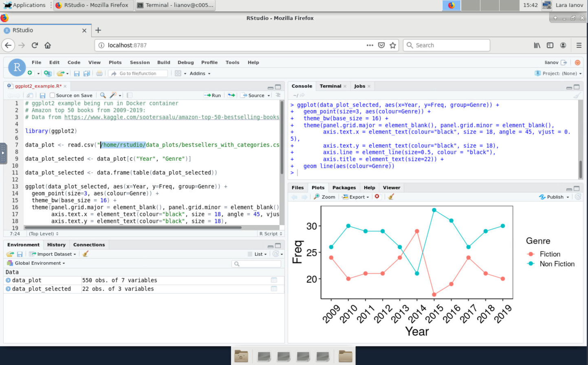

Review part 1 and 2 available in this website.
So far, everything has been run in my local Mac with Docker. However, for large datasets, a user may need computational resources which exceed a personal computer.
Yet, a requirement for running Docker containers is sudo
privilege which not available to users in a shared system such as HPC.
For this reason, users should use Singularity when running containers
in HPC. But if that’s the case, you may wonder why did we cover Docker
up until now?
A short answer to this question is that Docker is a more popular tool than Singularity and thus, there are more resources available to Docker. Furthermore, Docker is compatible with many container technology including Singularity. Therefore, a user can easily develop a Docker container and convert it to Singularity. Importantly, if you do choose to use Singularity for development, you will still need sudo privilege during the original image development as opposed to simply running the container where sudo privilege is not needed. For a more detailed overview check our this post by Itamar Turner-Trauring.
Since we will need to connect to RStudio in a web browser, we will launch Singularity within a VNC Session:
Singularity/3.5.2-GCC-5.4.0-2.26module load Singularitymodule list
Currently Loaded Modules:
1) shared 4) gcc/8.2.0 7) binutils/2.26-GCCcore-5.4.0 10) Singularity/3.5.2-GCC-5.4.0-2.26
2) rc-base 5) slurm/18.08.9 8) GCC/5.4.0-2.26
3) DefaultModules 6) GCCcore/5.4.0 9) Go/1.13.1
docker://user/image:tag
(see
the docs for more)cd $USER_SCRATCH
mkdir HPC_container_session
cd HPC_container_session
# Pull from Docker (NOTE the `docker://`)
singularity pull docker://lianov/rstudio_ggplot2:3.6.3This may take a few minutes, but after pulling and unpacking you should see:
INFO: Creating SIF file...
INFO: Build complete: rstudio_ggplot2_3.6.3.sifPASSWORD='NBI' singularity exec rstudio_ggplot2_3.6.3.sif rserver --auth-none=0 --auth-pam-helper-path=pam-helper --www-address=127.0.0.1Open the browser in the VNC session (“Applications > Web
Browser) and go to http://localhost:8787
Importantly, in Singularity, you will want to use your Cheaha ID
as the username to login with the password that was provided above which
you can change. Unlike Docker which is fully isolated, Singularity is
more integrated with the host filesystem (and it automatically mounts
$HOME, $PWD and /tmp).
Further, any data and directories that were copied in the Dockerfile
to /home/rstudio such as
/home/rstudio/data_plots are still available in the same
path even with your Cheaha ID (this is also true in Docker if you change
the user name to another one using
-e USER=<username>).
Thus, in my Singularity session, I can re-create the ggplot2 plot that was generated in Part 1 using the data in the container from the rstudio username:

As briefly mentioned, Singularity already mounts specific paths (see
docs), but if you would like to mount a specific path to the
container, you may do so in the similar method to Docker where we mount
a path from host to a target path on the container with
--bind $USER_SCRATCH/HPC_path_mount:/home/rstudio/data_mount
(you can choose another target path) :
PASSWORD='NBI' singularity exec --bind $USER_SCRATCH/HPC_path_mount:/home/rstudio/data_mount rstudio_ggplot2_3.6.3.sif rserver --auth-none=0 --auth-pam-helper-path=pam-helper --www-address=127.0.0.1Or you may also mount the host path directly without a target path in
the container with just
--bind $USER_SCRATCH/HPC_path_mount
PASSWORD='NBI' singularity exec --bind $USER_SCRATCH/HPC_path_mount rstudio_ggplot2_3.6.3.sif rserver --auth-none=0 --auth-pam-helper-path=pam-helper --www-address=127.0.0.1The containers are cached in $USER_DATA/.singularity. To
list them you may use singularity cache list -v. To remove,
use the singularity cache clean command (see
singularity cache clean -h for more details). I recommend
to use the dry-run flag before running the clean command
(singularity cache clean -n)
For this session we have focused on utilizing containers with an active RStudio session as many R analysis are interactive. However, it’s important to emphasize, that a user can also run a container (Docker or Singularity) for other purposes, such as running a command within the container:
Using my locally cached Bioconductor container, I can run a simple Linux command:
docker run --rm bioconductor/bioconductor_docker:RELEASE_3_10 echo Hello WorldOr a simple R computation:
docker run -it --rm bioconductor/bioconductor_docker:RELEASE_3_10 R -e '(5 + 8) * 2 == 26'
# ... output
> (5 + 8) * 2 == 26
[1] TRUESimilarly, this can also be accomplished with Singularity in Cheaha. For an overview of using Singularity containers for this purpose, please see the following: https://docs.uabgrid.uab.edu/wiki/Singularity_containers
The tutorial above provides a synopsis of the introduction to Singularity, however, we note that using Singularity can sometimes lead to a number of errors which are linked to key differences between Singularity and Docker. In this section, we illustrate a number of these issues, and provide solutions to them. To aid in the implementation of the solution, we are providing this helper script which is hosted in the GitHub repository of this training guide
run_rstudio_singularity.shEither git clone the main branch of this guide (https://github.com/U-BDS/training_guides), or download
the helper script directly. Ensure it’s executable
(chmod +x)
Ensure you have a Singularity image e.g.: run
singularity pull from a docker repository as shown
earlier.
Start your singularity run by providing the following parameters in a compute node in a VNC session:
USAGE: ./run_rstudio_singularity.sh -s SINGULARITY_IMAGE -p PASSWORD -u SERVER_USER [-m SINGULARITY_MODULE] [-w PORT] [-b "DIR_BINDS"] [--server-data-dir] [-c RSTUDIO_USER_PREFERANCES]
A helper script to execute RStudio Singularity containers
options:
-s (Required) The singularity image
-p (Required) The password for your RStudio container
-u (Required) The server username. Typically the same as $USER
-m (Optional) The Singularity module to load (Default: Singularity/3.5.2-GCC-5.4.0-2.26)
-w (Optional) The port number to RStudio container (Default: 8787)
-b (Optional) Directory to bind. Can be specified multiple times to bind additional directories
--server-data-dir (Optional) Use --server-data-dir param of rserver; typically available to rocker/rstudio tags > 4.0.0 (Default: false)
-c (Optional) The rstudio user config absolute path (e.g.: rstudio-prefs.json)
Example:
For a Singularity image that is linked to R > 4.0.0 with RStudio, we can start the container with the following:
./run_rstudio_singularity.sh -s rstudio_4.0.4.sif -p "NBI" -u $USER --server-data-dirExpected output will be:
Will append the following binding commands: --bind /scratch/lianov/singularity_test/singularity_tmp_dir
---- Initiating singularity exec ----
---- Go to http://localhost:8787 to visit your RStudio session ----
---- To stop the container, exit this script (e.g. ctrl+C)---- NOTE: we pass in --server-data-dir
which is only typically available to rocker/rstudio tags > 4.0.0; if
you have an error that this parameter is not available, then your
underlying rserver command in your container doesn’t
contain this flag. For example, for the image
rstudio_ggplot2_3.6.3.sif, you would start the container
by:
./run_rstudio_singularity.sh -s rstudio_ggplot2_3.6.3.sif -p "NBI" -u $USERIn this helper script we have disabled a number of Singularity
auto-mounts. Thus, you will need to pass in any directories to be
mounted with -b, each directory having its own
-b parameter
# here we mount $USER_SCRATCH/HPC_path_mount (a directory created within scratch space)
# and the current working directory (along rstudio --server-data-dir)
# Note that since we are binding two directories, there are two '-b' parameters
./run_rstudio_singularity.sh -s rstudio_4.0.4.sif -p "NBI" -u $USER -b $USER_SCRATCH/HPC_path_mount -b `pwd` --server-data-dirNo custom RStudio preferances provided. Defaulting to standard profile
Will append the following binding commands: --bind /scratch/lianov/singularity_test/singularity_tmp_dir --bind /scratch/lianov/HPC_path_mount --bind /scratch/lianov/singularity_test
---- Initiating singularity exec ----
---- Go to http://localhost:8787 to visit your RStudio session ----
---- To stop the container, exit this script (e.g. ctrl+C)---- NOTE: due to an issue we have encountered (see issue
#15), the home directory cannot be mounted through the helper script
(this is linked to the use of --containall, see more at https://sylabs.io/guides/3.1/user-guide/bind_paths_and_mounts.html#containall).
Thus, if you have any files in $HOME, which should be
available in the container, simply move them to any other directory
which is mounted such as the current working directory.
$USER_DATANote that we recommend against binding $USER_DATA for
most users who may also make use of OnDemand’s RStudio, or use R in
other methods in HPC. In some cases (outside of a container), R may
install packages in $USER_DATA (e.g.: if a user sets
library paths to $USER_DATA which is common). In this case,
if a user binds $USER_DATA, packages in this path may
conflict with the container’s. It’s OK to bind an isolated sub-directory
within $USER_DATA (e.g.: a hypothetical directory named
my_project, thus $USER_DATA/my_project), as
long as no R packages are not present in this directory.
An optional flag (-w) is available if port 8787 is
busy.
In part 2 of this tutorial, we demonstrated the use of a custom
rstudio profile in Docker. This can also be accomplished in Singularity,
with the notable difference being that the target binding in the
container should be linked to $USER user name rather than
rstudio. Our run_rstudio_singularity.sh script
has wrapped this binding in the optional -c flag, and thus
a custom profile can be passed on to the script in the following with
-c rstudio-prefs.json (assuming the json is in the current
working directory, otherwise, include absolute path).
run_rstudio_singularity.shFor clarity in the choice of parameters and other tasks within the
helper script, the following section highlights the sections of the
script with metadata (Solution_# as a
comment) to the error we have encountered in the table
below:
run_rstudio_singularity.sh
#######################
### PRE-REQUIREMENTS ##
#######################
# All files, directories etc. below are to avoid specific Singularity errors identified
# For more details see troubleshooting tips at:
# https://u-bds.github.io/training_guides/intro_to_docker_rstudio_part3.html#Singularity_troubleshooting_tips
mkdir -p run var-lib-rstudio-server rstudio_tmp #Solution_1 and 7 (#7 for rstudio_tmp)
printf 'provider=sqlite\ndirectory=/var/lib/rstudio-server\n' > database.conf #Solution_1
uuid > my_secure_cookie_key #Solution_2 and https://github.com/U-BDS/training_guides/issues/13
#######################
### RUN SINGULARITY ###
#######################
# explicit export the $PASSWORD and $USER environment variable
# see issue #15
export SINGULARITYENV_PASSWORD=$PASSWORD #Solution_3 and https://github.com/U-BDS/training_guides/issues/15
export SINGULARITYENV_USER=$SERVER_USER #Solution_3 and https://github.com/U-BDS/training_guides/issues/15
# launch the container, bind all needed directories etc.
echo -e \
"${yellow} \n---- Initiating singularity exec ---- \
\n---- Go to http://localhost:${PORT} to visit your RStudio session ---- \
\n---- To stop the container, exit this script (e.g. ctrl+C)---- \n ${reset}"
#NOTE: add_bind_params should be first in binding commands
# in case user re-binds pwd/cwd, or path within pwd/cwd
singularity exec \
--cleanenv \ #Solution_3
--containall \ #Solution_3
$add_bind_params \
--bind run:/run,var-lib-rstudio-server:/var/lib/rstudio-server,database.conf:/etc/rstudio/database.conf,rstudio_tmp:/tmp \ #Solution_1 / 7
--bind $cwd/my_secure_cookie_key \ #Solution_2
$SINGULARITY_IMAGE \
rserver \
--auth-validate-users=0 \
--auth-none=0 \
--auth-pam-helper-path=pam-helper \
--www-address=127.0.0.1 \
--secure-cookie-key-file $cwd/my_secure_cookie_key \ #Solution_2
--server-user=$SERVER_USER \ #Solution_4
--www-port $PORT \ #Solution_5
$server_data_dir #Solution_6: enables --server-data-dirFirefox is already running, but is not responding. To open a new window, you must first close the existing Firefox process, or restart your systemOne solution is outlined in the Firefox user questions: https://support.mozilla.org/en-US/questions/971866 and summarized below:
Create a separate firefox profile with
firefox -p profilename. All profiles can be view at
/home/<HPC_id>/.mozilla/firefox
That should resolve the issue, but importantly this makes your latest profile set as default. Thus, if you encounter the same error switch to the older existing profile. You can read more about setting default profile for Firefox at: https://support.mozilla.org/en-US/kb/profile-manager-create-remove-switch-firefox-profiles
ERROR system error 17 (File exists) [path: /home/$USER/.rstudio, target-dir: ]
followed by message which may state “Unable to connect to service”, the
cause is likely linked to the .rstudio directory located in
$HOME. Using the helper script we provide above should
minimize this since $HOME is not mounted, however, we add
special emphasis to this error in this guide since it’s also referenced
in the UAB
RC docs here if a user is using the OOD RStudio Server.